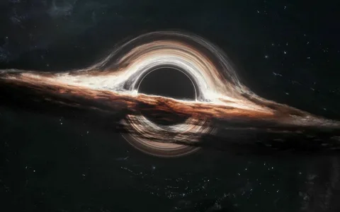
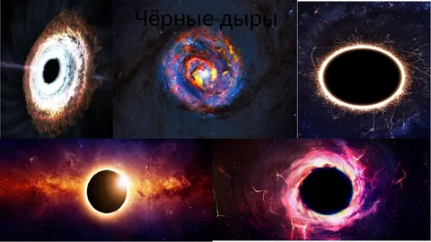
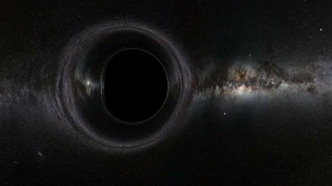

Что такое черная дыра?
Черная дыра — это область пространства-времени, где гравитация настолько сильна, что ничто, даже свет, не может вырваться из нее. Черные дыры образуются, когда массивные звезды исчерпывают свой запас топлива и коллапсируют под действием собственной гравитации.
Типы черных дыр
Существует несколько типов черных дыр, включая стеллярные, сверхмассивные и промежуточные черные дыры. Стеллярные образуются в результате коллапса звезды, а сверхмассивные находятся в центрах галактик.
Известные черные дыры
Некоторые из самых известных черных дыр включают Sagittarius A*, которая находится в центре нашей галактики, и черную дыру в галактике M87, первая фотография которой была сделана телескопом Event Horizon.